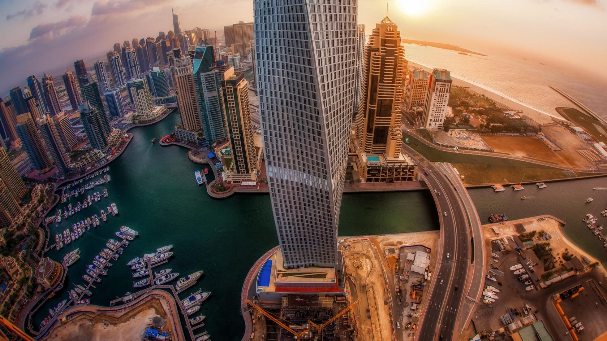
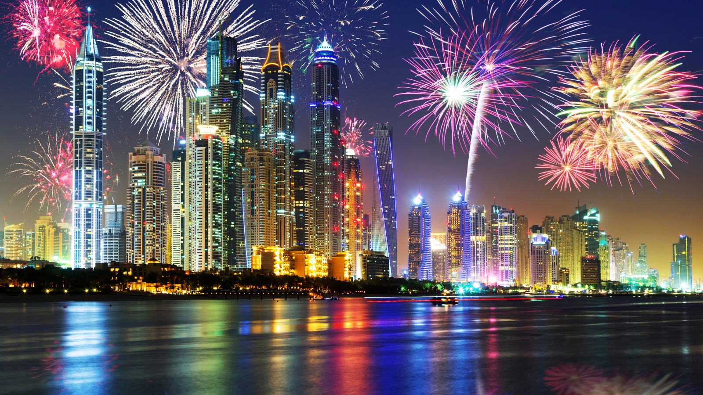
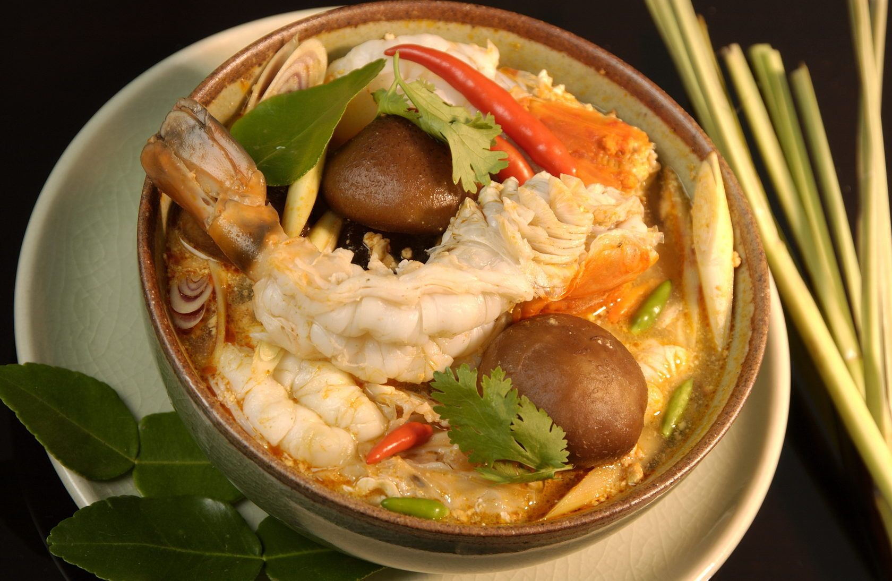
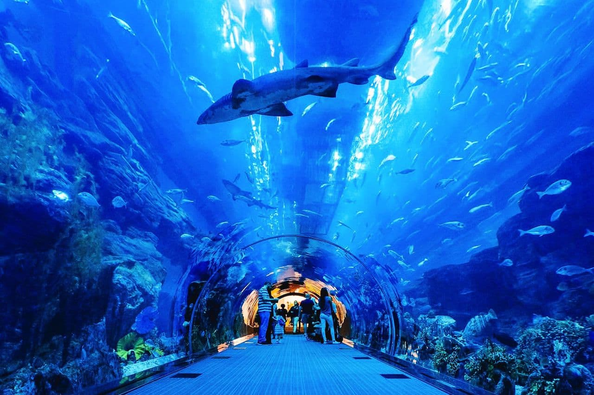
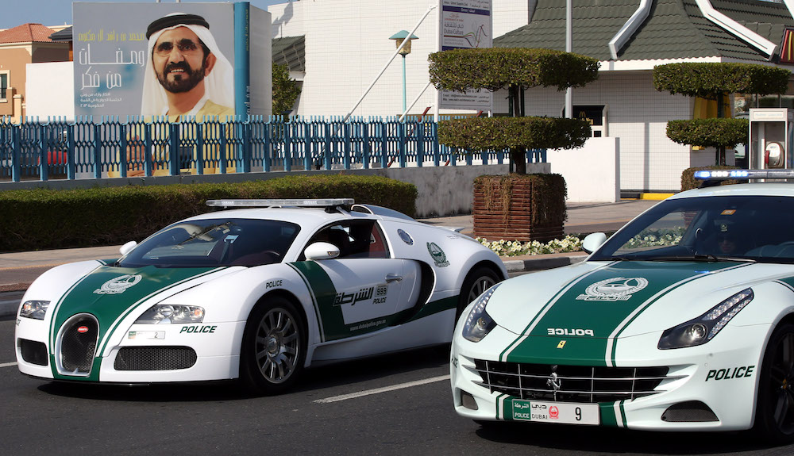

Памятка: ОАЭ
Памятка туристам, выезжающим в оаэ
ПЕРЕД ОТЪЕЗДОМ
Проверьте наличие необходимых для поездки документов:
Заграничный паспорт сроком действия не менее 6 месяцев с даты начала поездки, паспорт должен иметь не менее двух свободных страниц для проставления визы; ксерокопию загранпаспортов (могут пригодиться при утрате загранпаспорта и в случае иных непредвиденных обстоятельств); авиабилеты или маршрут/квитанции электронного билета; ваучер; страховой медицинский полис.

В случае путешествия с детьми: Несовершеннолетний гражданин Российской Федерации, следующий совместно хотя бы с одним из родителей, ДОЛЖЕН ВЫЕЗЖАТЬ ИЗ РОССИЙСКОЙ ФЕДЕРАЦИИ ТОЛЬКО ПО СВОЕМУ ЗАГРАНИЧНОМУ ПАСПОРТУ.
Без необходимости оформления для ребенка отдельного заграничного паспорта несовершеннолетний гражданин Российской Федерации до 14 лет может выехать совместно хотя бы с одним из родителей, если он вписан в ОФОРМЛЕННЫЙ ДО 01 МАРТА 2010 ГОДА заграничный паспорт выезжающего вместе с ним родителя. В паспорт родителя в этом случае ОБЯЗАТЕЛЬНО должна быть вклеена фотография ребенка, независимо от его возраста, на которой должна стоять печать паспортно-визовой службы. Отсутствие фотографии или печати является основанием для отказа ребенку в пересечении границы. Выезд из Российской Федерации несовершеннолетних детей, сведения о которых внесены в паспорта сопровождающих их родителей, оформленные до 01 марта 2010 года, осуществляется по срокам действия этих паспортов.
На заграничные паспорта, оформленные после 1 марта 2010 года, распространяются нормы Постановления Правительства РФ №13 от 19 января 2010 года о том, что внесение сведений о детях в паспорт, удостоверяющий личность родителя, не дает права ребенку на выезд за пределы территории Российской Федерации без документа, удостоверяющего личность гражданина Российской Федерации за пределами территории Российской Федерации.
При следовании несовершеннолетнего российского гражданина через государственную границу Российской Федерации совместно с одним из родителей, предъявлять письменное согласие второго родителя не требуется, если только от него ранее в пограничные органы не поступало заявления о своем несогласии на выезд из Российской Федерации своих детей.
Если у несовершеннолетнего ребенка и выезжающего совместно с ним родителя разные фамилии, то рекомендуем взять с собой нотариально заверенную копию свидетельства о рождении — для подтверждения родства. Рекомендуется заранее готовить копию свидетельства о рождении ребенка, переведенного на английский язык и заверенного нотариально для предоставления в Иммиграционную службу ОАЭ. На практике отсутствие такого подтверждения служило основанием для отказа ребенку в выдаче визы и в пересечении границы.
Беременным женщинам, у которых роды предполагаются в течение ближайших четырех недель, необходимо представить письменное согласие врача на полет. Медицинское заключение должно быть оформлено не менее чем за неделю до даты перелета. В отсутствии документов сотрудники авиакомпании имеют полное право отказать в авиаперевозке или потребовать медицинского освидетельствования в аэропорту вылета. Перевозка беременной осуществляется при условии, что перевозчик не несет никакой ответственности перед Пассажиркой за последствия для нее, что удостоверяется ее гарантийным обязательством (распиской).

Собирая багаж:
Рекомендуем все ценные вещи, документы и деньги положить в ручную кладь и взять с собой в самолет. В багаж следует упаковать все металлические острые и режущие предметы (маникюрные ножницы, пилочки для ногтей, перочинный ножик и т.п.), а также любые жидкости, гели и аэрозоли (за исключением, если в этом есть необходимость, детского питания и лекарств) - проносить подобные предметы в ручной клади ЗАПРЕЩЕНО. Не забывайте собрать и взять с собой аптечку первой помощи, которая поможет Вам при легких недомоганиях, сэкономит Ваше время на поиски лекарственных средств и избавит от проблем общения на иностранном языке.

В РОССИЙСКОМ АЭРОПОРТУ ВЫЛЕТА/ПРИЛЕТА
Перед выездом в аэропорт рекомендуем получить дополнительную информацию о возможно произошедших изменениях в условиях вылета Вашего рейса, используя возможности сайта авиакомпании, выполняющей рейс, или по телефону ее справочной службы.
Рекомендуем заблаговременно, не позднее, чем за три часа до вылета рейса, прибыть к месту регистрации пассажиров для прохождения установленных процедур регистрации, оформления багажа, и выполнения требований, связанных с пограничным, таможенным, санитарно-карантинным, ветеринарным и другими видами контроля, установленными законодательством РФ.
Таможенный контроль до начала путешествия
Если Вы не перемещаете через границу валюту и предметы, которые необходимо декларировать, то Вам следует проходить зону таможенного контроля по «Зеленому коридору».
Без предъявления документов и без внесения сведений о валюте в пассажирскую таможенную декларацию туристы имеют право вывезти наличную иностранную валюту и/или валюту Российской Федерации, а также дорожные чеки на сумму не более 10.000 долларов США. При вывозе физическими лицами иностранной валюты и/или валюты Российской Федерации в эквиваленте до 10.000 долларов США, либо дорожных чеков в сумме, превышающей 10.000 долларов США, эти суммы средств должны быть задекларированы в пассажирской таможенной декларации.
На денежные средства, вывозимые с помощью банковской карты, ограничений нет. Банковскую карту декларировать не требуется.
ВНИМАНИЕ! ЗАПРЕЩЕНО на выезде и въезде! ПЕРЕМЕЩЕНИЕ КУЛЬТУРНЫХ ЦЕННОСТЕЙ, ОБЪЕКТОВ ДИКОЙ ФАУНЫ и ФЛОРЫ, находящихся под угрозой исчезновения, ОРУЖИЯ И БОЕПРИПАСОВ к нему БЕЗ РАЗРЕШЕНИЯ УПОЛНОМОЧЕННЫХ ОРГАНОВ.
Незаконное перемещение товаров или валюты через таможенную границу Российской Федерации или их недекларирование, либо недостоверное декларирование влечет за собой административную или уголовную ответственность.
ВНИМАНИЕ! ЗАПРЕЩЕНО на выезде и въезде! ПРИНИМАТЬ ОТ ПОСТОРОННИХ ЛИЦ чемоданы, посылки и другие предметы для перевозки на борту воздушного судна.
ТАМОЖЕННЫЙ КОНТРОЛЬ по окончанию путешествия. Если Вы не перемещаете через границу валюту и предметы, которые необходимо декларировать, то Вам следует проходить зону таможенного контроля по «Зеленому коридору».
Без уплаты таможенных пошлин можно ввозить в Российскую Федерацию товары для личного пользования на сумму не более 10.000 евро по курсу на день декларирования, общим весом – не более 50 килограммов.
Физическое лицо не моложе 18 лет может ввозить без уплаты таможенных пошлин: 3 литра алкогольных напитков и пиво; 50 сигар (сигарилл) или 200 сигарет или 250 граммов табака, либо указанные изделия в ассортименте общим весом не более 250 граммов.
При единовременном ввозе в Россию физическими лицами наличной иностранной валюты и/или валюты Российской Федерации, а также дорожных чеков, внешних и/или внутренних ценных бумаг в документарной форме в сумме, в эквиваленте превышающей 10.000 долларов США, сведения о ней необходимо внести в пассажирскую таможенную декларацию. Декларации также подлежат: вывозимые драгоценные металлы, камни, культурные ценности, государственные награды РФ, редкие животные и растения, наркотические, психотропные, сильнодействующие, ядовитые, радиоактивные вещества, химикаты, высокочастотные устройства, радиоэлектронные, транспортные средства, ядерные материалы, информация, связанная с НТП для изготовления оружия массового поражения, продукция военного характера.
РЕГИСТРАЦИЯ НА РЕЙС И ОФОРМЛЕНИЕ БАГАЖА
Регистрация пассажиров и оформление багажа производятся на основании именного авиабилета или распечатанной на бумажном носителе маршрут/квитанции электронного билета, а также заграничного паспорта пассажира.
При регистрации пассажиру выдается посадочный талон, в который необходимо сохранять до момента возможного предъявления авиакомпании претензий по качеству предоставленных услуг авиаперевозки.
Помните, что регистрация на рейс заканчивается за 40 минут до времени вылета рейса, указанного в билете по местному времени. Пассажиру, опоздавшему ко времени окончания регистрации пассажиров и оформления багажа или посадки в воздушное судно, может быть отказано в перевозке.
Рекомендуем отдельно уточнять в авиакомпании нормы бесплатного провоза и габариты багажа, принимаемого к перевозке.
За провоз багажа сверх установленной нормы бесплатного провоза багажа, взимается дополнительная плата по тарифу, установленному перевозчиком. Перевозчик имеет право отказать туристу в перевозе багажа, вес или объем которого не соответствуют установленным нормам.
ПАСПОРТНЫЙ КОНТРОЛЬ
Для прохождения пограничного контроля необходимо предъявить заграничный паспорт. Пограничным органам ФСБ России при осуществлении пограничного контроля предоставлено право запрашивать у туристов дополнительные документы (авиабилет, посадочный талон, ваучер и т.п.), а также проводить опрос лиц, следующих через границу.
САНИТАРНЫЙ КОНТРОЛЬ
Туристам сертификат о прививках не требуется.
ВЕТЕРИНАРНЫЙ КОНТРОЛЬ
Если Вы вывозите животных, то Вам необходимо иметь комплект документов, подтверждающих, что они здоровы. Как правило, следует иметь: Ветеринарный паспорт, Справку о состоянии здоровья (выдается любой государственной ветеринарной клиникой, в справке указываются сведения о прививках по возрасту, последняя прививка от бешенства должна быть сделана не ранее, чем за год и не позднее, чем за два месяца до выезда), Справку из клуба СКОР или РКФ (в справке указывается, что собака не представляет племенной ценности, справки из других клубов вызывают вопросы на таможне). При ввозе домашних животных в ОАЭ необходимо предъявить ветеринарное свидетельство с отметкой о всех прививках, включая прививку против бешенства.. В день отлета перед регистрацией на пограничном контрольном ветеринарном пункте аэропорта необходимо получить на основании собранных ранее документов международный ветеринарный сертификат. На таможне также необходимо предъявить разрешение на вывоз животного. Животные подвергаются ветеринарному осмотру. Свидетельство не требуется при ввозе котят и щенков в возрасте до трех месяцев.
При ввозе в РФ животных и птиц Вам необходимо иметь сопровождающее ветеринарное свидетельство, полученное в Государственной ветеринарной службе страны, где приобретено животное.
Запрещен ввоз на территорию Российской Федерации любых грузов животного происхождения, в том числе в ручной клади и багаже, при отсутствии письменного разрешения Главного государственного ветеринарного инспектора Российской Федерации.
Без разрешения уполномоченных органов РФ запрещено ввозить и вывозить объекты дикой фауны и флоры, находящиеся под угрозой исчезновения.

В ДУБАЙСКОМ АЭРОПОРТУ ПРИЛЕТА/ВЫЛЕТА
По прибытию в аэропорт Дубаи Вы должны последовательно: получить визу, пройти паспортный контроль, пройти таможенный контроль, сканирование сетчатки глаза, получить свой багаж, выйти из здания аэропорта, найти встречающего гида с табличкой, предъявить гиду туристский ваучер. При въезде в ОАЭ сканируют сетчатку глаза (eye control). Это позволяет пресечь въезд в страну лиц, которые ранее были депортированы из страны и попали в «чёрные списки».

ПАСПОРТНЫЙ КОНТРОЛЬ
ВИЗА. С 01 февраля 2017 года визы в ОАЭ на 30 дней пребывания для граждан РФ, прибывших в страну с туристической целью, выдаются в аэропорту прилета.
Оформление данной визы возможно в любом аэропорту ОАЭ. Сборы за визу не взимаются. В случае повторного въезда в ОАЭ необходимо каждый раз получать визу в аэропорту прилета.
ВНИМАНИЕ! Для граждан, не имеющих гражданства Российской Федерации, могут быть установлены иные правила въезда на территорию ОАЭ. Получить информацию по этому вопросу следует в посольстве ОАЭ по месту гражданства. У Вас могут потребовать предъявить туристский ваучер и обратный авиабилет. Въезд девушек до 30 лет желателен в сопровождении совершеннолетнего брата, отца или мужа. Если женатая молодая пара моложе 30 лет имеет разные фамилии, необходимо заранее подготовить копию свидетельства о браке переведенное на английский язык и заверенное нотариально. Детям с отдельным паспортом открывают визы в случае, если их сопровождает родитель с такой же фамилией. Может возникнуть задержка с открытием визы или отказ, если ребенка сопровождает взрослый с другой фамилией. Необходимо заранее подготовить копию свидетельства о рождении ребенка, переведенного на английский язык и заверенного нотариально.

ТАМОЖЕННЫЙ КОНТРОЛЬ
Ввоз и вывоз валюты ограничен суммой денежных средств (валюта или дорожные чеки), не превышающих 100,000 дирхам.
Разрешен беспошлинный ввоз лицам старше 20 лет (на 1 человека): 400 сигарет/50 сигар или 500 грамм табака. Лица, не исповедующие ислам, могут ввезти до 4 литров спиртных напитков.
ЗАПРЕЩЕН ввоз наркотиков, некоторых лекарств, содержащих большую дозу наркотических, психотропных веществ, оружия, фото, видеоматериалы, печатная продукция предосудительного или фривольного содержания, религиозную пропаганду.
ЗАПРЕЩЕН вывоз драгоценностей, антиквариата, исторических ценностей, оружия и боеприпасов без специального разрешения.
Запрещен ввоз: товаров, произведенных в израиле и юар
САНИТАРНЫЙ КОНТРОЛЬ
Для въезда в страну не требуется предъявление медицинского сертификата о прививках и об освидетельствовании на ВИЧ/СПИД.
ВЕТЕРИНАРНЫЙ КОНТРОЛЬ
Для ввоза/вывоза животных необходимо наличие международного сертификата установленного образца. Размещение с животными – под запрос конкретного отеля, как правило, отели в ОАЭ размещения с домашними животными не предоставляют.
ОБЪЕДИНЕННЫЕ АРАБСКИЕ ЭМИРАТЫ

ОАЭ – государство в северной части Аравийского полуострова, омываемое водами Персидского и Оманского заливов. Граничит с Саудовской Аравией, Оманом. Северное побережье находится напротив Ирана через Персидский залив, на северо-западе – государство Катар. ОАЭ состоит из семи эмиратов, каждый из которых представляет собой микро-государство с абсолютной монархией: Абу-Даби, Аджман, Дубай, Рас эль-Хайма, Умм эль-Кайвайн, Фуджейра и Шарджа. Столица государства - г. Абу-Даби и одноименный эмират. Территория страны составляет свыше 80 000 кв.м., включая около 6000 кв.м. (около 200 прибрежных островов). На эмират Абу-Даби приходится 85 % площади всех ОАЭ; а наименьший из эмиратов — Аджман — всего 250 км². Большую часть страны занимает пустыня Руб-Эль-Хали - самая большая в мире территория, покрытая песками. Государство возглавляется президентом Объединённых Арабских Эмиратов, которым является эмир крупнейшего эмирата Абу-Даби.
Время. Нет разницы с Москвой.
Климат
Климат. Климат страны очень жаркий и сухой (тропический пустынный). Часто бывают песчаные бури. Температура летом 35—40 градусов С, часто достигает 50, а зимой днём 20—25 градусов, ночью прохладнее. Наилучший сезон – с октября по май.
Валюта. Денежная единица: дирхам ОАЭ (Dh или AED по стандарту ISO). Дирхам привязан к доллару США. В местной валюте расплачиваться выгоднее. Обменять можно в любом обменном пункте, в центре города выгоднее, чем при отеле.
Язык. Официальный язык – арабский. Языки делового общения - английский.
Население. Около 5 миллионов человек. 88% горожане. Этнический состав неоднородный: 30% арабы-граждане ОАЭ, из них – 11% коренные жители, остальные – иммигранты, приехавшие из Индии, Бангладеш, Шри-Ланки, Пакистана и других стран Азии и Африки на временные заработки.
Религия. Официальная религия - ислам. Коран налагает на правоверных ряд строгих запретов, которые должны неукоснительно соблюдаться.
Фото: tild3838-3762-4033-a239-373361346664__12-img_0725.jpg
Обычаи. Сдержанность и уважение - обязательны при посещении мечети, лучше всего осматривать ее, когда там нет богослужения. У входа в мечеть, в дом или квартиру полагается снимать обувь. Нежелательно входить в мечеть в шортах, коротких юбках и футболках. Женщины должны входить с покрытой головой. Следует также воздержаться от посещения мечети в пятницу, особенно утром. Выбирая одежду нужно избегать мини-юбок, глубоких декольте и просвечивающих платьев на голое тело. Особое внимание одежде нужно уделить туристам, проживающим в эмирате Шарджа, наиболее консервативном в этом отношении. Слишком откровенный наряд может создать вам проблемы не только с полицией, но и с местными ловеласами, которые тут же начнут делать вам сомнительные предложения. Рекомендуем Вам при выборе одежды для прогулок в городе учитывать нравы и обычаи восточной страны. Нельзя фотографировать женщин в черных накидках. Если Вы хотите сфотографировать мужчину, непременно спросите разрешения. В ОАЭ есть определенные ограничения и правила для женщин. Например, очередь за билетами будет разделена на две линии - мужчин и женщин. При посадке в транспорт женщины также должны становиться в отдельную очередь и занимать передние места в салоне. В метрополитене первый вагон обычно предназначен исключительно для женщин. На пляжах выделяют специальные дни для посещения только женщин и только мужчин. Заговорить с незнакомой женщиной для мужчины - нарушение этикета.
В священный месяц Рамадан мусульманам запрещается еда от восхода до заката солнца. Туристам во время Рамадана не рекомендуется употреблять в публичных местах какую-либо пищу или напитки, курить и жевать жевательную резинку. Пренебрежение этим правилом может повлечь задержание полицией за неуважение законов и традиций.
Как известно, правоверным мусульманам запрещено употреблять алкоголь, употребление алкоголя на улицах общественным мнением не одобряется, и может привести к задержанию полицией, депортации из страны. Хотя этот не распространяется на приезжих, если они не исповедуют ислам, однако помните, что в стране категорически запрещено предлагать или дарить алкоголь мусульманам, а также садиться за руль в нетрезвом виде. Если вы «приняли на грудь» в ресторане, баре или на дискотеке, постарайтесь молча дойти до выхода, поймать такси и вернуться в отель. Распитие спиртных напитков, включая пиво, в общественных местах (на уличной скамейке, в парке, на пляже) может быть наказано штрафом и тюремным заключением. Алкоголь доступен в ресторанах и барах при отелях, цены на него сопоставимы с московскими. На вынос продавать не разрешено. В ресторанах, фаст-фудах и закусочных, расположенных в городе (не при отеле), алкоголь не подаётся. В Эмиратах ограничена продажа алкоголя в магазинах, кафе и ресторанах (в Шардже, к примеру, алкоголь под полным запретом). Внимание: перевозить алкоголь из эмирата в эмират незаконно.
Праздники и нерабочие дни. 1 января – Новый год, 2 января – национальный день. Выходные дни — вторая половина четверга, пятница и суббота. Остальные праздничные дни связаны с лунным календарем и не имеют фиксированной даты. Мулид аль-Наби – День рождения пророка Мухаммеда. Рамадан – месяц поста. Ид эль-Фитр или Малый Байрам. Этот трехдневный праздник завершает месяц поста рамадан. Ид эль-Адха или Большой Байрам (трехдневный праздник жертвоприношения) отмечается через 70 дней после «Малого Байрама», в конце месяца паломничества в Мекку. Мусульманский новый год – первый день священного месяца мухаррам, в течение которого наиболее щедро раздается милостыня (закят, садака), вершатся благословенные поступки.

Кухня. Национальная кухня Эмиратов - это традиционная и практически единая для арабских стран кухня, сформированная под влиянием особых природно-климатических и религиозных особенностей региона. Свинину мусульмане в пищу не употребляют, поэтому здесь ее очень редко готовят. Тем не менее, местные повара очень вкусно готовят блюда из говядины, баранины, телятины, козлятины, рыбы, морепродуктов (преимущественно на углях) и птицы. Попробуйте блюда: всевозможные «кебабы», «гузи» - мясо ягненка с рисом и орехами, шаверму, «кустилету» - котлеты из баранины. Особый аромат блюдам придают яркие приправы (перец, травы, корица, чеснок, лук). Любая трапеза начинается с «меззе» - маленькие закуски-аперитивы (оливки, сыр «фета», лаваш, зелень). Очень вкусные и сладкие блюда: пахлава, пончики, щербет, пудинг и др. Есть здесь блюда и европейской кухни. Особо почитаемый напиток – кофе.

Магазины. Магазины работают в будние дни с 10.00 - 24.00, в выходные – с 10.00 - 22.00. На рынках и на уличных прилавках принято торговаться. В качестве сувениров из страны везут стеклянные, деревянные или фарфоровые фигурки верблюдов, изделия из жемчуга, золота, восточные сладости и специи.
Фото: tild3162-3966-4837-b137-326261366261___.jpg
Транспорт. Общественный транспорт слабо развит, представлен такси и реже автобусами (в Дубае и Абу-Даби). Такси – самый удобный для туристов вариант, оплата как по таксометру (Абу Даби, Дубаи), так и по договоренности. Такси, стоящее на улице, дешевле, чем на стоянке у отеля. Можно воспользоваться маршрутными такси, которые работают с утра до позднего вечера. Мини-басы или автобусы курсируют по расписанию (в некоторых отелях бесплатно) на пляж, до торговых центров.
Аренда автомобиля. В аэропорту, крупных отелях можно оформить аренду автомобиля минимум на 24 часа. Основные условия – наличие международных водительских прав, выданных не менее 1 года назад (при их отсутствии – временное разрешение на право вождения в ОАЭ: паспорт, нац права и 2 фото), возраст не моложе 21 года, страховка, наличие залога наличными или кредитной картой. Правила дорожного движения - западноевропейские, движение правостороннее. Если вы увидели машину с однозначным номером - это автомобиль шейха или его близких, лучше притормозите, как и в случае встречи знака "осторожно: верблюд". Водитель, сбивший верблюда, должен будет выплатить его стоимость и компенсацию за моральный ущерб. В населенных пунктах ограничение скорости - 60 км/час, на автобанах - 100 км/час. Размер штрафа зависит от превышения скорости. В случае ДТП необходимо вызвать полицию по телефону 999 и получить справку об аварии, без нее вы не сможете получить страховку и разрешение на ремонт автомобиля. При непродолжительной парковке - стоянка бесплатная, за час - плата 2 дирхама. Если вы воспользовались стоянкой с автоматом, то опустите 2 дирхама в автомат и получите талон, который крепится на лобовом стекле автомобиля.
Фото: tild6538-6262-4461-a634-653037623166__jpg.jpg
Телефон. Выгоднее звонить из телефона-автомата на улице, оплачивая карточками или монетами. Карточки продают в магазинах и на автозаправочных станциях.
Чтобы позвонить в Россию надо набрать: 00 (выход на международную связь) + 7 (код России) + код города + номер абонента.
Чтобы позвонить из России в Эмираты: 8-10-971 + код города + номер абонента. Из эмирата в эмират, или со стационарного номера на мобильный и, наоборот, следует набирать: 0 + код города + номер абонента. Из отеля в город нужно набрать «9», и, после гудка, - номер абонента. По телефонной карте «prepaid card» можно звонить с любого телефона (в том числе из отеля) по минимальному тарифу. Коды городов: Абу-Даби — 2, Дубаи — 4, Хорфаккан — 70, Рас-Аль-Хайма — 7, Аджман, Умм-Аль-Кувейн, Шарджа — 6, Фуджейра — 9.
Экстренные телефоны. Полиция - 999, скорая помощь – 998/999, пожарная служба - 997. Справочная: 180 или 181

В отеле. В день приезда расселение осуществляется в соответствии с правилами, принятыми в отеле. Обычно начиная с 14-00 местного времени. Расчетный час, как правило, 12-00. Просим ознакомиться на месте с условиями предоставления услуг в отеле и придерживаться установленных отелем правил. Некоторые отели при заселении требуют депозит, который возвращается клиентам после выселения из отеля за вычетом стоимости услуг, которыми воспользовались клиенты за время их пребывания в отеле. В день выезда до наступления расчетного часа (как правило, 12-00) необходимо освободить свой номер и оплатить дополнительные услуги: телефонные переговоры, мини-бар, заказ питания и напитков в номер, массаж и др. Свой багаж Вы можете оставить в камере хранения отеля и оставаться на территории отеля до прибытия трансфера. Если Вы не сдали номер до 12-00, стоимость комнаты оплачивается полностью за следующие сутки.
Просим принять к сведению:
- В ОАЭ при бронировании туров в отели 2* и 3* для женщин до 30 лет, вместе с пакетом документов для оформления визы необходимо высылать гарантийное письмо, подтверждающее или дающее гарантию того, что туристы вернутся из поездки. Гарантийное письмо должно быть выслано на сумму 1500 USD.
- Для посещения ресторанов системы «A-La Carte» требуется предварительное резервирование мест и дополнительная оплата (включая многие отели с системой питания «все включено»).
Туристам также следует иметь в виду, что в ОАЭ взимается туристический налог на проживание в отелях.
Фото: tild6630-3534-4363-a166-386566646233__dubai.jpg
Напряжение электросети. Напряжение может быть 220 V, 50 Гц. Для электроприборов, сделанных в США, может понадобиться переходник.
Экскурсии. Гид принимающей Вас в Эмиратах туроператорской компании во время встречи в отеле сообщит Вам перечень предлагаемых экскурсий, их содержание, график проведения и их стоимость. Не рекомендуем Вам приобретать экскурсии или прочие услуги в неизвестных Вам туристских и экскурсионных агентствах. Вам может быть дана заведомо ложная информация о самой экскурсии, а также о качестве транспорта для ее организации. Вам может быть предоставлено для использования несертифицированное, неисправное или не соответствующее санитарно-гигиеническим нормам оборудование, в том числе зараженный паразитарными, грибковыми, инфекционными заболеваниями инвентарь, включая сжатый воздух в баллонах для погружения.

Чаевые. Принято оставлять чаевые (бакшиш) носильщикам и официантам (в размере 5-10 % от суммы счета). Считается, что заслуживают поощрения водители автобусов, горничные в гостинице, экскурсоводы, если клиент остался доволен обслуживанием.
ПРАВИЛА ЛИЧНОЙ ГИГИЕНЫ И БЕЗОПАСНОСТИ:
Перед путешествием мы советуем ознакомиться с «Полезными советами российским гражданам, выезжающим за рубеж», размещенными на сайте МИД России: http://www.mid.ru/dks.nsf/advinf
Не нарушайте правила безопасности, установленные авиакомпаниями, транспортными организациями, гостиницами, местными органами власти. Проявлять более чем дружеские чувства в публичных местах запрещено под угрозой крупного штрафа, и даже депортации из страны.
Перед поездкой рекомендуется сделать ксерокопии основных страниц (с фотографией, личными данными, отметкой о регистрации) заграничного и внутреннего российского паспортов и взять их с собой. Паспорт (или ксерокопию паспорта), визитную карточку отеля носите с собой.
Уважайте традиции страны, в которой находитесь, помните, что в государствах с исламской культурой следует особенно соблюдать установленный этикет в одежде и правила употребления любых алкогольных напитков.
При возникновении транспортных аварий, конфликтов с полицией, другими органами местной власти необходимо поставить в известность представителя принимающей стороны или сотрудников Посольства/консульства России.
В период путешествия Вы не имеете права на коммерческую деятельность или иную оплачиваемую работу.
Вы обязаны покинуть ОАЭ до истечения срока визы, в противном случае Вы можете быть подвергнуты штрафу, аресту и высланы из страны в принудительном порядке.
Не оставляйте детей одних без Вашего присмотра на пляже, у бассейна, на водных горках и при пользовании аттракционами.
Следует учитывать особенности местной фауны, в том числе помнить, что купание в море сопряжено с опасностью нападения акул и иных, обитающих в море рыб, медуз (в сентябре-октябре) и животных. Просим соблюдать правила безопасности, установленные в этой связи в конкретном отеле и (или) регионе. Помните, что многообразные представители животного и растительного мира могут быть не только красивыми, но и опасными. Если Вы поранились или были укушены, немедленно обратитесь к врачу.
Будьте осторожны с солнцем! Особенно в период с 11.00 по 14.00 по полудню. Советуем Вам заранее запастись защитными от солнечных ожогов средствами и пользоваться ими в период пребывания на солнце. Не забудьте и про солнцезащитные очки.
Будьте внимательны – кондиционеры работают на полную мощность, и могут способствовать простудным заболеваниям.
Возьмите в путешествие индивидуальную аптечку с необходимым Вам набором лекарств.
Не рекомендуется носить с собой большие наличные суммы. Не следует вынимать из кошелька на виду у всех большие суммы денег.
Чтобы избежать опасности на улицах, рекомендуем следить за своими сумочками и бумажниками, особенно в туристических центрах, на вокзалах, автозаправочных станциях и рынках. Покидая автобус на остановках и во время экскурсий, не оставляйте в нем ручную кладь, особенно ценные вещи и деньги.
Автомобили советуем оставлять на охраняемых стоянках и в гаражах отелей, и не оставлять ценные вещи в машине на виду.
Важные документы, наличные деньги и драгоценности лучше хранить в сейфе номера. Если в номере нет сейфа, его можно взять в аренду за плату у администрации отеля или сдать на хранение портье в сейф на стойке регистрации.
Мойте руки перед едой. Не пейте сырую воду, особенно из открытых водоемов. Для питья рекомендуется использовать минеральную воду, которую можно приобрести в магазинах и барах отеля.
Рекомендуется сдавать ключ от номера на стойку регистрации отеля, в случае его утери поставить в известность администрацию.
Во многих отелях запрещается выносить из номера полотенца на пляж или к бассейну. Не приносите на пляж полотенца или инвентарь из номера без разрешения персонала. Купаться в одежде в бассейне запрещено.
Если в номере имеется мини бар, то все напитки и закуски, взятые из него, как правило, должны быть оплачены.
Категорически запрещается курить в постели.
Имейте в виду, что в городах существует система штрафов за засорение улиц, а также за плевки на улице.
За торговлю наркотиками, некоторыми лекарственными препаратами (содержащие кодеин) законодательство ОАЭ предусматривает пожизненное заключение или высшую меру наказания.
Законодательством ОАЭ ЗАПРЕЩАЕТСЯ:
- купаться и загорать «топлес» и в обнаженном виде как мужчинам, так и женщинам;
- нельзя фотографировать никакие государственные учреждения, банки, военные объекты, полицейские участки и дворцы шейхов.
- нельзя так же делать фотографии местных женщин.
Во всех туристических районах ОАЭ есть отделения туристической полиции, куда в случае необходимости Вы можете обратиться.
Если Вы оказались на территории иностранного государства без средств к существованию, Вы имеет право на получение помощи от дипломатических представительств и консульств РФ.

В СЛУЧАЕ ПОТЕРИ ПАСПОРТА.
Как только Вы поняли, что загранпаспорт потерялся, или его украли, то незамедлительно обращайтесь в дипломатическое представительство, в консульское учреждение или в представительство МИД России, которое находится в пределах приграничной территории.
Вам необходимо получить свидетельство на въезд в РФ (REENTRY CERTIFICATE TO THE RUSSIAN FEDERATION), которое еще называется временным загранпаспортом. Выдается на срок до 15 дней, для того, чтобы Вы успели купить обратный билет и улететь на родину.
Для того, чтобы Вам выдали свидетельство на возвращение в РФ, необходимо представить следующие документы:
•основной документ, на основании которого будут предприниматься какие-либо действия, это заявление о выдаче свидетельства (образец заявления)
•две фотографии цветного или черно – белого исполнения. Размер должен соответствовать 35х45 мм на четком фоне с четким изображением лица.
•обязательно понадобится Ваш внутренний паспорт РФ, так же возможно предоставление других документов для подтверждения своей личности, это водительские права или служебное удостоверение.
Срок выдачи свидетельства на возвращение в РФ составляет 2 рабочих дня со дня регистрации заявления.
Вернувшись в Российскую Федерацию, в трехдневный срок необходимо сдать свидетельство в организацию, выдавшую паспорт (ОВИР, МИД).
Все вышеперечисленные документы регламентированы пунктом 20 Приказа МИД России от 28.06.2012 года № 10304.

ПОЛЕЗНАЯ ИНФОРМАЦИЯ
Посольство Российской Федерации в ОАЭ: Абу-Даби, а/я 8211, ул. Халифа, восточные участки 65/67, здание Посольства России
Телефон: 02-672-17-97 (часы работы 11:00 — 13:00, кроме пятницы и субботы), консульский отдел: (02) 672-35-16. Факс: (971)-2-678-87-31
Электронная почта: uaeruss@hotmail.com
Http://www.uae.mid.ru/
Генеральное Консульство РФ в Дубае: Дубаи, Джумейра, Str.6B, Villa No 21, Community No 367–432, Um Al Sheif. (04) 328-53-47
Факс: (971)-04-328-56-15
Http://www.gconsdubai.mid.ru/
Посольство ОАЭ в России: г. Москва, ул. Улофа Пальме, 4;
тел.: (495) 147-62-86, 234-40-60,
Факс: (495) 234-40-70
Консульский отдел Посольства ОАЭ в РФ — тел.: (495) 147-00-66
ЖЕЛАЕМ ВАМ ПРИЯТНОГО ПУТЕШЕСТВИЯ!
По всем вопросам свяжитесь с нами любым удобным способом:
E-mail: trohin.zh@yandex.ru
Телефон: +7 (977) 730 95 22
Соцсети: вконтакте | instagram | telegram
Индивидуальный предприниматель трохин евгений альбертович
ИНН 503613656680 / ОГРН ИП 315507400016056
Город москва, щербинка ул. юбилейная д.3а
Заполните анкету
Мы подберем идеальный тур, исходя из ваших желаний и эмоционального настроя.